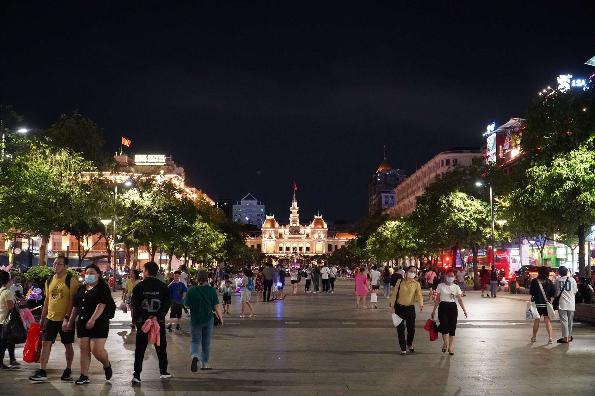
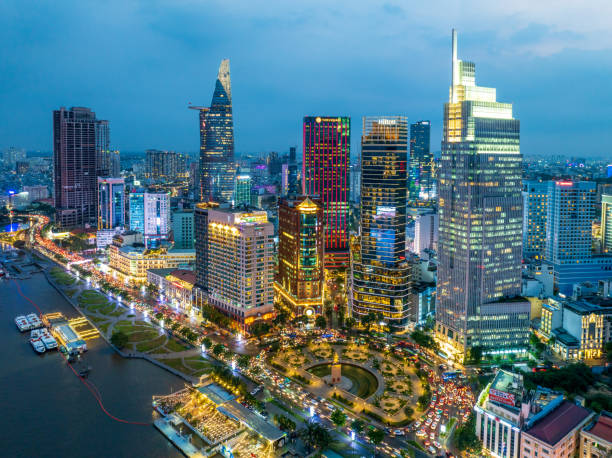
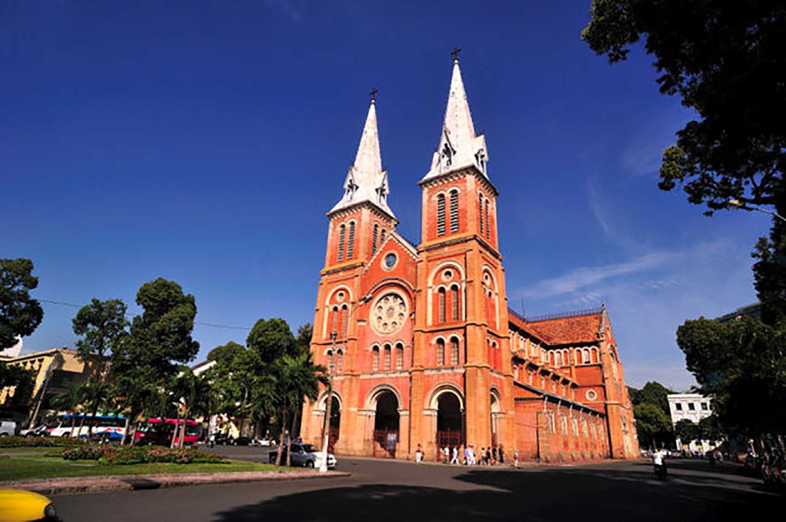
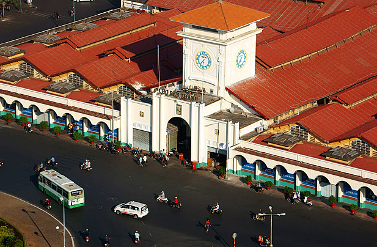
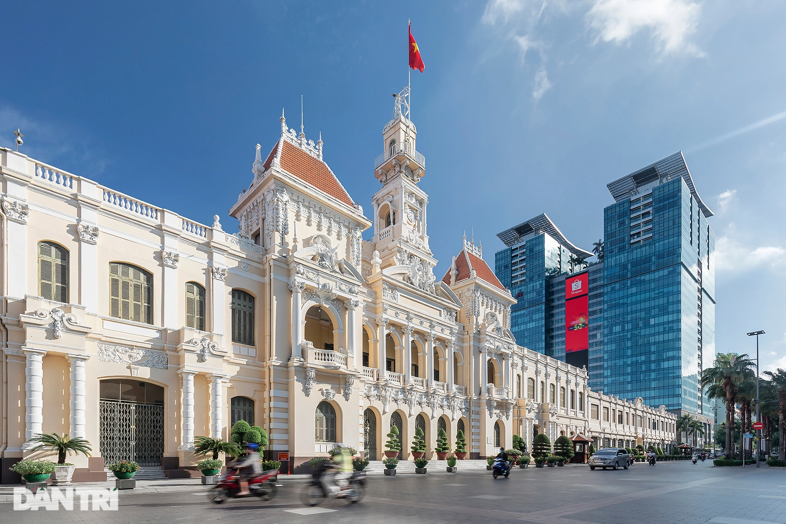

Du khách nên ghé thăm Dinh Độc Lập, Bưu điện Trung tâm, Nhà thờ Đức Bà và chợ Bến Thành để cảm nhận nhịp sống sôi động của thành phố.
Các khu phố như Nguyễn Huệ hay Phố đi bộ Bùi Viện cũng rất lý tưởng để dạo chơi và trải nghiệm văn hóa đường phố.
TP. HCM nổi tiếng với ẩm thực đa dạng từ các món ăn đường phố như bánh mì, hủ tiếu, bún thịt nướng đến các nhà hàng cao cấp.
Các quán cà phê, trà sữa và quán nhậu cũng là nơi trải nghiệm văn hóa địa phương độc đáo.
TP. Hồ Chí Minh là trung tâm kinh tế, văn hóa và lịch sử miền Nam Việt Nam, từng là Sài Gòn xưa với nhiều dấu ấn thuộc địa Pháp.
Các công trình kiến trúc như Dinh Thống Nhất, Nhà thờ Đức Bà và các biệt thự Pháp cổ phản ánh chiều sâu lịch sử.
Văn hóa địa phương là sự pha trộn giữa truyền thống Việt Nam và ảnh hưởng quốc tế, tạo nên nét sống động, năng động.
Các lễ hội, triển lãm và nghệ thuật đường phố cũng góp phần làm phong phú đời sống văn hóa.
Mặc dù là thành phố hiện đại, TP. HCM vẫn có nhiều không gian xanh như Công viên Tao Đàn, Công viên 23/9 và các hồ cảnh quan.
Sông Sài Gòn chảy qua thành phố, mang đến những cảnh quan thơ mộng và các hoạt động du thuyền thú vị.
Các khu vực ngoại ô như Cần Giờ cũng cung cấp cảnh quan thiên nhiên gần gũi với biển và rừng ngập mặn.
Nhịp sống kết hợp giữa hiện đại và thiên nhiên tạo nên trải nghiệm đa dạng cho du khách.
TP. HCM có khí hậu nhiệt đới gió mùa với hai mùa rõ rệt: mùa mưa từ tháng 5 đến tháng 11 và mùa khô từ tháng 12 đến tháng 4.
Người dân TP. HCM năng động, thân thiện, dễ gần và luôn sẵn sàng giúp đỡ du khách.
Sự hòa nhập giữa nhịp sống hiện đại và truyền thống tạo nên nét đặc trưng riêng, khiến du khách dễ dàng cảm nhận sức sống của thành phố.




